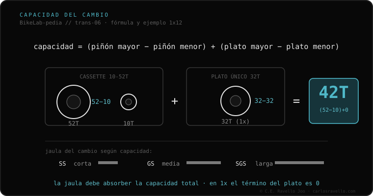

La capacidad del cambio es cuánta cadena «sobrante» puede recoger el cambio trasero sin que quede floja ni demasiado tensa. Se calcula con una fórmula simple: (piñón mayor − piñón menor) + (plato mayor − plato menor). Ejemplo en monoplato 1x12 con cassette 10-52T y plato de 32T: (52−10) + (32−32) = 42T. Si tu combinación supera la capacidad del cambio, la cadena cuelga en las marchas cortas o, peor, el cambio se rompe al forzarlo. La longitud de la jaula (corta SS, media GS, larga SGS) marca esa capacidad.
Es el número que decide si una combinación de platos y cassette va a funcionar… o a colgar la cadena. Y casi nadie lo calcula antes de comprar.
El cambio trasero hace dos cosas: mueve la cadena entre piñones y mantiene la tensión. Esa tensión la da la jaula, y tiene un límite: la capacidad. Si pones un cassette más grande o un segundo plato, la diferencia total de dientes puede superar lo que la jaula recoge. Por eso un cambio de jaula corta de ruta no sirve para un cassette gigante de montaña, aunque «entre».

Calcula tu capacidad necesaria con la fórmula y compárala con el dato del fabricante de tu cambio. Además del total, revisa el piñón máximo admitido (p. ej. «hasta 52T»). Las dos condiciones deben cumplirse: capacidad total Y piñón máximo.
Si dudas qué cassette, núcleo o cadena le entra a tu bici, mándanos el caso. Diagnóstico real, sin venderte nada. Escríbenos por WhatsApp
(piñón mayor − menor) + (plato mayor − menor). En 1x el segundo término es 0. Compara el resultado con el máximo de tu cambio.
En las marchas cortas la cadena queda floja y golpea; al cruzar a plato y piñón grandes a la vez, puedes romper el cambio.
Corta (SS) para rangos pequeños (ruta 1x); larga (SGS) para cassettes amplios de montaña. La jaula define la capacidad.